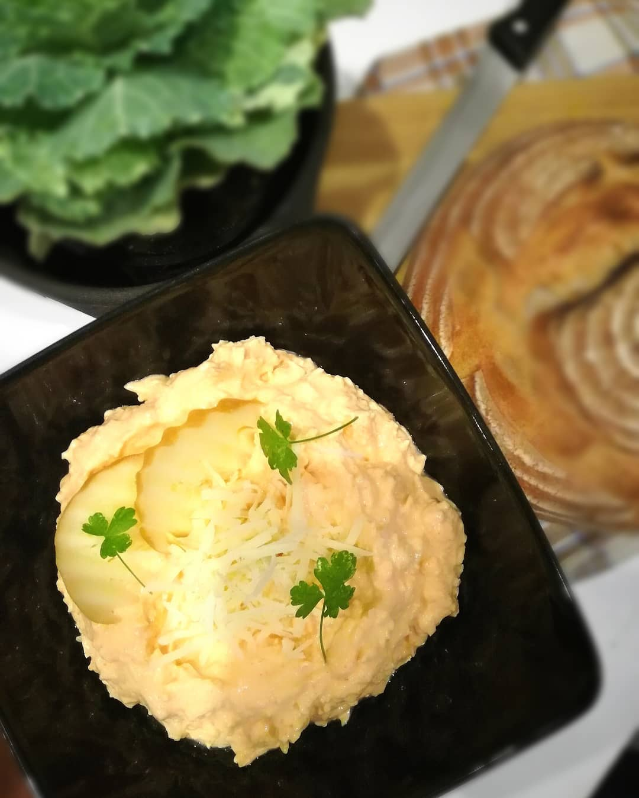

Dnes si dáme jednu bomba nátierku, ktorá Vám vyrazí dych a budete si želať nech sa Vám z taniera nestráca😂. NÁTIERKA Z ÚDENÉHO SYRU
Potrebujeme:
100g lučiny, 100g údeného syru, 1ČL údenej mletej papriky, 1ČL pretlačený cesnak, 6PL bieleho jogurtu.
Postup:
Syr nastrúhajte najemno a zmiešajte so všetkými ostatnými surovinami.
Hotovo!
Nezabudni na to, že je to nátierka a zabezpečte si nejaké dobre a kvalitne pečivko. Ja som na to skoro zabudla a takmer zmizla skôr ako som pripravila chlieb. Vynikajúca je😋😋😋.
#fitapetit#natierka#pomazanka#recepty#jednoduchoafit#glutenfree#lowcarb#fitrecepty#befit#syrovanatierka#lucina#fitzivot#